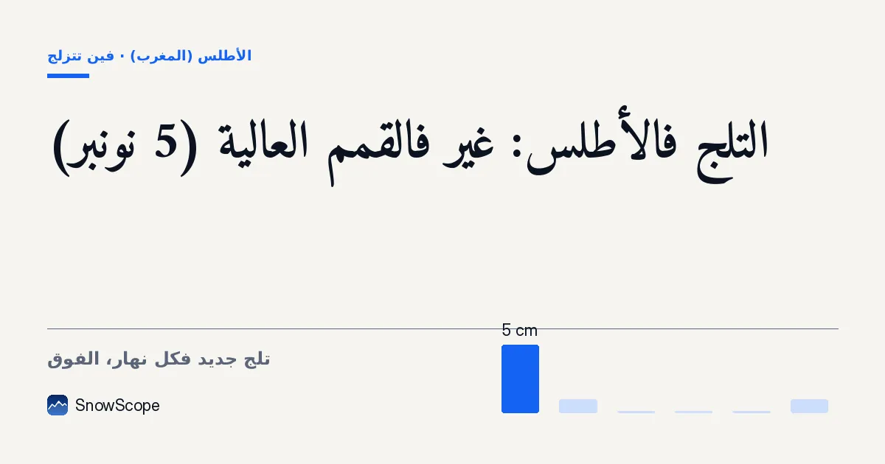

التلج فالأطلس: غير فالقمم العالية (5 نونبر)
نونبر الباكر جاب التلج للقمم الفوقانية ديال الأطلس، لاكن المحطات الثلاث ديال التزحلق كاتهم بلاش اليوم. الخريطة ديال التلج كاتبان 60 كم² غطا أبيض، محصور في القمم فوق 3,000 م، والعلو الأكثر ديال التجميع قاع 11 سم تقريبا. النبضة ديال البدية ديال الموسم كاتنقص بسرعة.
شوف توقعات التلج مباشرة ديال Oukaimden فالتطبيق ديال SnowScopeالعلو ديال التلج، التنبيهات والخريطة 3D، فابور.
شنو اللي كاتبان الخريطة ديال التلج اليوم
في 3 نونبر، الأطلس كان عندو 750 كم² من غطا التلج. جوج نهار بعد ديك، هاد الحال تنقص لـ 60 كم². الحكاية ديالها ذوبان سريع: دعاسة باكرة ديال الموسم رقيقة اللي جاتها بسرعة ولاكن تختفي بنفس السرعة في الدفي ديال الخريف. التلج تاع اليوم كايتعلق فقط بالقمم الفوقانية، حيت درجات الحرارة ديال الهوا تبقى منخفضة بزاف باش تحفظو.
Oukaimden تاخذ 6 سم من التلج الجديد على 72 ساعة قبل 5 نونبر، الفترة الأكثر نشاط. التساقط الطري ديك اهبط بين 3 نونبر و 4 نونبر. لغاية اليوم، ما جاش حتى حاجة جديدة. Habri و Michlifen ما سجلوش التلج بالمرة في نفس الفترة.
| المحطة | العلو ديال التلج | تلج جديد، 72 س | جاي، الأيام الجاية | الفوق |
|---|---|---|---|---|
| Oukaimden | 0 سم | 6 سم | 1 سم | 3241 م |
| Habri | 0 سم | 0 سم | 0 سم | 2108 م |
| Michlifen | 0 سم | 0 سم | 0 سم | 1932 م |

الارتفاع أهم من اسم المحطة
المحطات الثلاث—Oukaimden في 3,241 م، Habri في 2,108 م، و Michlifen في 1,932 م—كاتبان صفر التلج على الجهات الفوقانية ديالهم في 5 نونبر. التلج اللي موجود كايتعلق فقط على التراب الفارغ فوق الأرض ديال التزحلق، في الزون حيت الارتفاع والتعريض (الوجهة) كايزنو أكثر من كل حاجة. هاد الشي ما هو غريب بزاف في نونبر الباكر في المغرب: العلو الطبيعي ديال التلج في هاد التاريخ قرب Oukaimden، محسوب في محطة ديال القياس في 2,930 م في الشتوات اللي فاتو، كان 0 سم في 34 من 46 سنة اللي فاتو.
Oukaimden عندها الميزة ديال الارتفاع. القمة ديالها توصل 3,241 م، بزاف في الزون حيت التلج ديال نونبر كايقدر يبقى. Habri و Michlifen، كاتاهم تحت 2,110 م، كايحتاجو لشروط أبرد بزاف بزاف باش يعملو التلج في الارتفاعات ديالهم—شروط اللي ما وصلوش بعد في الخريف ديال هاد السنة.
الشتا والتلج الرطب في التوقعات
في 7 نونبر، مستوى التجميد في Oukaimden كاتكون التوقعات شي حد بين 3,870 م و 4,490 م. واش معناتها الشتا كايزول على كل بيست ديال المحطة، حتى في القمة. أي التلج اللي كايقدر يبقى لغاية ديك الوقت كايصير طين. نفس الخطر ديال 6 و 8 نونبر: مستوى التجميد كايبقى فوق الأرض ديال المحطة على طول الأسبوع.
Habri و Michlifen كاتاهم منخفضة أكثر، بحال الشتا كايهيمن على التوقعات ديالهم. ولا واحدة من المحطات عندها الارتفاع باش تخلق التلج في النموذج الحالي.
شنو اللي كايصير في الأسبوع اللي جاي
في 8 نونبر، الخريطة ديال SnowScope كاتتوقع زيادة شوية لـ 100 كم² من غطا التلج على الأطلس كاملا، لاكن هاد الشي منتشر على المدى كاملو. Oukaimden كايقدر تاخذ 1 سم من التلج الجديد في 8 نونبر، كيف كيفها في 8 نونبر بالخصوص. هاد الإضافة اللي ما تستاهلش ما كاتخلقش شروط قابلة للتزحلق على الجهات.
المحطات الثلاث كاتبقى بلاش إلا إذا جات عاصفة أبرد. Oukaimden هي فقط المحطة الارتفاع ديالها بزاف باش تحول الحدث الجاي من التلج اللي يكون أبيض بدل الرطب. شوف الخريطة بشد الحزام في كل مرة اللي التوقعات تتبدل—أنماط نونبر الباكر كايقدرو يتبدلو بسرعة.
شنو معنى هاد الشي للموسم
بداية بلاش ديال نونبر ما هي تراجع في الأطلس؛ هي النرمال. واخا التلج جاي في الكمية—عادة من ديسمبر لفوق—كايقع بسرعة وعميق بزاف. التلج ديال البدية اللي جاي في أكتوبر أو نونبر الباكر كايدوب. رتب الزيارة ديالك ديال الأطلس على الموسم الكبير، واخا العواصف كاتكون أبرد وتبقى أطول.
إذا تمشيت للجهات في الأسبوع اللي جاي، توقع الصخر والعشب يكونو قريبين بزاف من السطح ديال أي غطا رقيق. التوقعات كايقدرو يتبدلو مع 2–3 نهار ديال التنبيه، بحال شوف الخريطة ديال SnowScope دابا قبل اللي تخرج.
نصايح للي كيتزلجو
- التلج ديال البدية رقيق وضعيف. ابقى على البيستات المفتوحة والمسطحة حيت كايرى الأساس كاملو. الصخر والأرض الفارغة كايخفيو تحت تاع التلج الرقيق.
- الشتا كاتكون التوقعات باش توصل للقمم لغاية 8 نونبر. أي التلج اللي كايقدر يبقى كايصير طين أو جليد.
- Oukaimden هي فقط المحطة اللي عندها الارتفاع باش تحفظ التلج في النموذج الحالي. Habri و Michlifen كايحتاجو هوا أبرد بزاف بزاف باش يبنيو قاعدة.
- شوف الموقع ديال المحطة باش تاخذ تاريخ فتح الرفعات والشروط قبل اللي تمشي. التلج ما موجود على الخريطة ما معناتها المحطة فتاحة.
- اشد إنذار التلج الطري في تطبيق SnowScope باش تعرف متى جاي الحدث الكبير اللي جاي للأطلس.
على هاد الأرقام
العلو ديال التلج فالمحطات هو أكثر تلج فالجهة الفوقانية فالتاريخ المكتوب؛ هادو تقديرات لمنطقة، ماشي قياس فنقطة وحدة. التوقعات يمكن تتبدل. ديما شوف النشرة الرسمية ديال الانهيارات قبل ما تخرج من البيست.
كيفاش تستاشهد بهاد المقال
للبحث، التعليم ولا الصحافة: الأرقام والرسومات تقدر تعاود تخدم بيهم بحرية تحت CC BY 4.0 مع هاد الاستشهاد.
SnowScope (2026), التلج فالأطلس: غير فالقمم العالية (5 نونبر), https://snowscope.app/blog/ar/2026/11/atlas-morocco-atlas-snow-check-5-november-2026.html, تشاف ف 2026-11-05
SnowScope (Atlas Labs). (2026, November 5). التلج فالأطلس: غير فالقمم العالية (5 نونبر). SnowScope snow reports. https://snowscope.app/blog/ar/2026/11/atlas-morocco-atlas-snow-check-5-november-2026.html
BibTeX
@misc{snowscope2026atlasmoroccoatlassnowche,
author = {{SnowScope (Atlas Labs)}},
title = {التلج فالأطلس: غير فالقمم العالية (5 نونبر)},
year = {2026},
month = nov,
howpublished = {\url{https://snowscope.app/blog/ar/2026/11/atlas-morocco-atlas-snow-check-5-november-2026.html}},
note = {Published 2026-11-05 20:13 UTC; accessed 2026-11-05}
}· CC BY 4.0 · الطريقة، الداتا والأدوات →
Oukaimden: التلج والحرارة حسب العلو، هاد الشتا مقارنة مع اللي فاتت (الأدوات) →
تابع Oukaimden
فابور: ميساج ملي يجي التلج، والتوقعات كل صباح.
تقارير أخرى ديال التلج

يوم 15 ديسمبر، Oukaïmeden ديال الوسط فيها 16 سم ضد Val Thorens 89 سم. تفقدنا الديار ديال المصاعد. المعطيات من 13 نونبر 2026.

المحطات ديال التزلج فالأطلس مافيهومش التلج اليوم. الموديل ديال التلج ديالنا كيلقى التلج غير فالقمم العالية: تقريبا 80 كم² ديال الأرض اللي فيها التلج، …

فـ 15 دجنبر فـ Michlifen، 89% ديال الشتوات اللي فاتو غالبا مافيهاش تلج. الفرصة الأحسن كتجي بعد الزوبعة، مافيش حساب للتاريخ. المعطيات من 13 نونبر 2026.